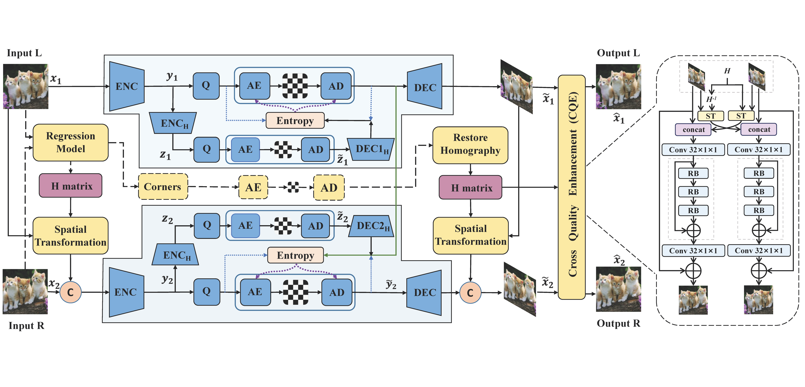
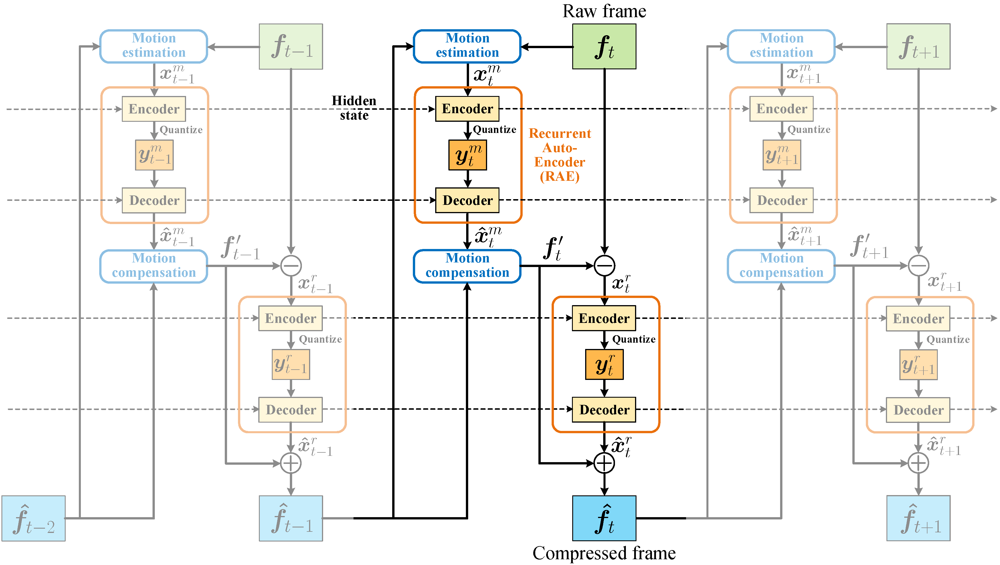
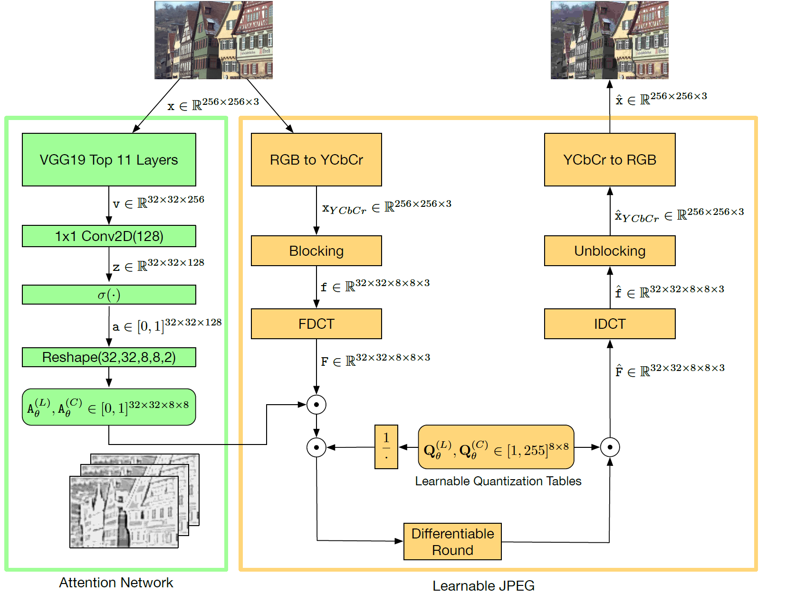
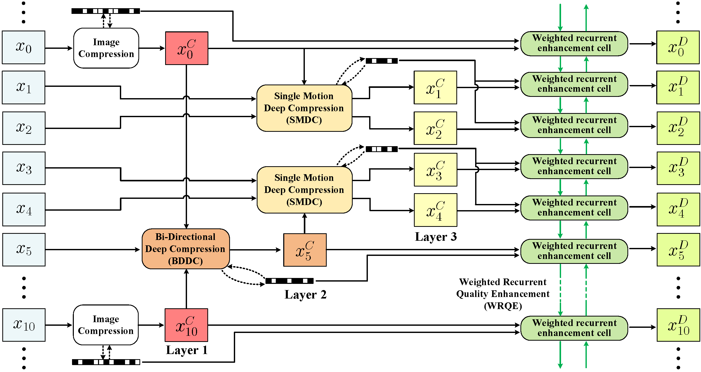

YANG, Ren
 |
YANG, Ren |
Biography
I am a Doctoral (PhD) student at the Computer Vision Lab, ETH Zurich, Switzerland, under the supervision of Prof. Dr. Luc Van Gool and Dr. Radu Timofte. My research interests include learned video compression and quality enhancement. I obtained the M.Sc. degree in 2019 at the MC^2 Lab, Beihang University, P.R. China, under the supervision of Prof. Dr. Mai Xu, and obtained the B.Sc. degree at the same university in 2016. My Master Thesis got the Winner of Three Minute Thesis Competition at IEEE ICME 2019 [Certificate], and won the Outstanding Master Thesis Award of Chinese Institute of Elecronics [News] [Certificate].
{kind=link}
{kind=link}
I worked as a Research Intern (2018-2019) in the Intelligent Multimedia Group, Microsoft Research, under the supervision of Dr. Xiaoyan Sun and Prof. Dr. Wenjun Zeng. I won the Award of Excellence at Microsoft Research during my internship [Certificate].
{kind=link}
News
- I will serve as a Guest Speaker for the Data Compression Tutorial at CVPR 2021.
- One paper is accepted to CVPR 2021 (Oral). [Paper] [Code]
- Our US Patent for multi-frame video enhancement has been published. [Google Patent]
- I serve as a Senior Program Committee (SPC) member for IJCAI 2021.
- We organize the video enhancement challenges at the NTIRE workshop in CVPR 2021.
- Talk on Learning-based Video Compression, Dec. 23, 2020 [Slide] [Video record (in Chinese)]
- One paper is accepted to IEEE Journal of Selected Topics in Signal Processing (J-STSP). [Paper] [Code]
- We deliver a Tutorial on Learned Image and Video Compression at IEEE VCIP 2020. [Abstract] [Slide] [Video record]
- I supervise a Master's Semester Thesis on learned image compression at ETH Zurich.
- Our open source deep video compression project OpenDVC is on-line. [Code] [Technical report]
- One paper is accepted to CVPR 2020. [Paper] [Code]
- One paper (collaborated with my wife) is accepted to IEEE Trans. on Image Processing (T-IP). [Paper] [Code] [Dataset]
- I won the 2019 Outstanding Master Thesis Award of Chinese Institute of Elecronics. [News]
- One paper is accepted to ICCV 2019 (Oral). [Paper] [Code]
- One paper is accepted to IEEE Transactions on Pattern Analysis and Machine Intelligence (T-PAMI). [Paper] [Code]
- I got the Winner of Three Minute Thesis Competition at IEEE ICME 2019. [Certificate]
Selected Publications
|  |
Deep Homography for Efficient Stereo Image Compression |
|  |
Learning for Video Compression with Recurrent Auto-Encoder and Recurrent Probability Model |
|  |
Learning to Improve Image Compression without Changing the Standard Decoder |
|  |
Learning for Video Compression with Hierarchical Quality and Recurrent Enhancement |
 |
Understanding and Predicting the Memorability of Outdoor Natural Scenes |
 |
Wavelet Domain Style Transfer for an Effective Perception-distortion Tradeoff in Single Image Super-Resolution |
 |
Quality-Gated Convolutional LSTM for Enhancing Compressed Video |
 |
MFQE 2.0: A New Approach for Multi-frame Quality Enhancement on Compressed Video |
 |
A Deep Learning Approach for Multi-Frame In-Loop Filter of HEVC |
 |
Multi-Frame Quality Enhancement for Compressed Video |
 |
Reducing Complexity of HEVC: A Deep Learning Approach |
 |
Enhancing Quality for HEVC Compressed Videos |
 |
Saliency-Guided Complexity Control for HEVC Decoding |
Patents
- Multi-frame quality enhancement method and device for lossy compressed video
WO2019154152A1 [Google Patent]
US20200404340A1, 2020 [Google Patent]
CN108307193B, 2018 [Google Patent] [Certificate]
- Deep learning method-based block segmentation coding complexity optimization method and device
WO2019179523A1 [Google Patent]
CN108495129B, 2019 [Google Patent] [Certificate]
- A CNN-based method for image and video enhancement
CN107481209B, 2020 [Google Patent] [Certificate]
- A saliency-guided method for complexity control of HEVC decoding
CN106210717B, 2017 [Google Patent] [Certificate]
Awards
- Winner of Three Minute Thesis Competition, IEEE ICME 2019. [Certificate]
- 2019 Outstanding Master Thesis Award of Chinese Institute of Elecronics. [News] [Certificate]
- Award of Excellence at Microsoft Research. [Certificate]
- TOP 10 Graduate Students Award, Beihang University. [Certificate]
- National Scholarship, P.R. China. [Certificate]
{kind=link}
{kind=link}
Tutorials
- CVPR 2021: Learning for Visual Data Compression [Tutorial homepage]
- IEEE VCIP 2020: Learned Image and Video Compression with Deep Neural Networks. [Abstract] [Slide] [Video record]
Workshops
- New Trends in Image Restoration and Enhancement (NTIRE) workshop, in conjunction with CVPR 2021.
Services
Senior Program Commitee (SPC) Member:
- International Joint Conference on Artificial Intelligence (IJCAI 2021)
Journal Reviewer:
- International Journal on Computer Vision (IJCV)
- IEEE Transactions on Image Processing (T-IP)
- IEEE Journal of Selected Topics in Signal Processing (J-STSP)
- IEEE Transactions on Multimedia (T-MM)
- IEEE Transactions on Circuits and Systems for Video Technology (T-CSVT)
- IEEE Access
- Signal Processing: Image Communication
- Neurocomputing
Conference Reviewer:
- IEEE/CVF Conference on Computer Vision and Pattern Recognition (CVPR 2021)
- IEEE International Conference on Computer Vision (ICCV 2021)
- European Conference on Computer Vision (ECCV 2020)
- International Joint Conference on Artificial Intelligence (IJCAI 2021)
- Asian Conference on Computer Vision (ACCV 2020)
- IEEE/CIC International Conference on Communications in China (ICCC 2018)
Teaching
- Supervisor: Master's Semester Thesis on learned image compression, ETH Zurich (Spring 2020)
- Teaching Assistant: Digital Image Processing, Beihang University (Spring 2017)